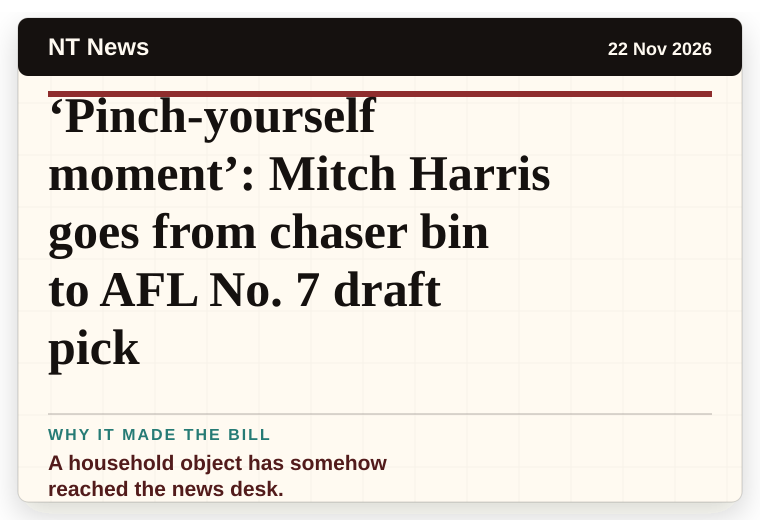
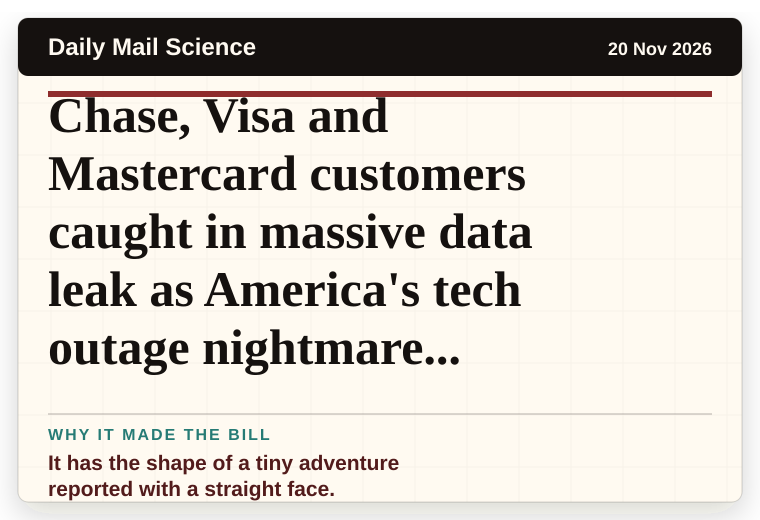
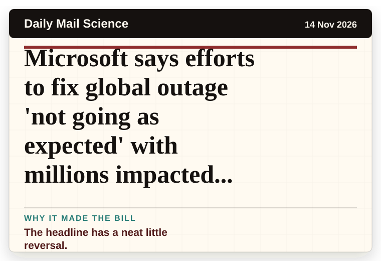
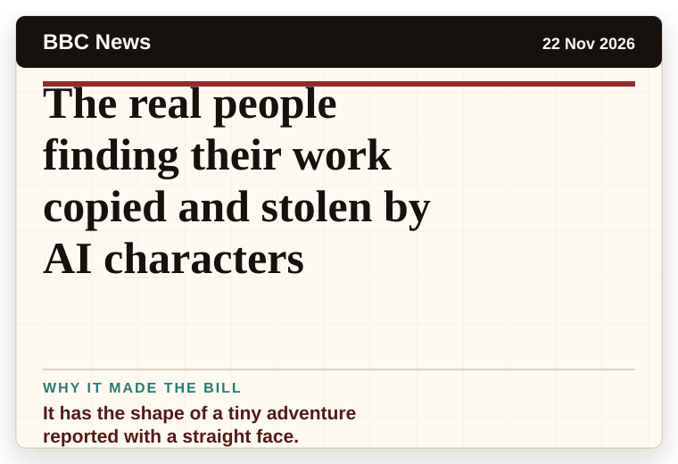
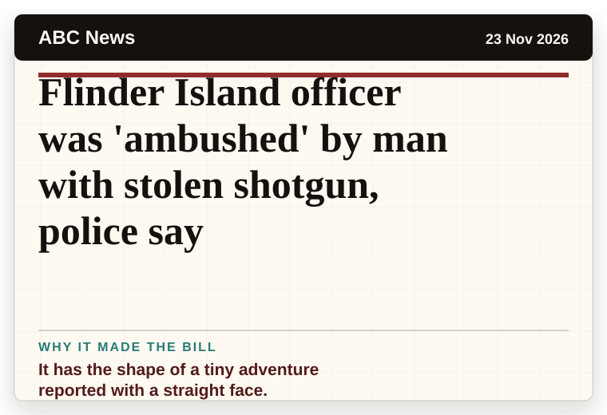
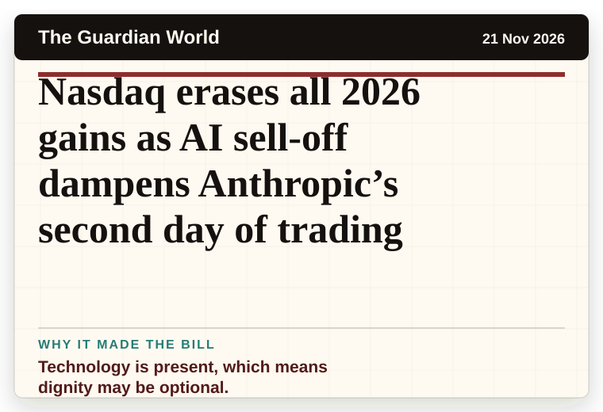

NT News
Australia
‘Pinch-yourself moment’: Mitch Harris goes from chaser bin to AFL No. 7 draft pick
A household object has somehow reached the news desk.
The latest daily picks, linked back to the original sources. Search the room, pick a source, or follow a headline out to the full story.
Record updated: 23 Nov 2026, 11:53 AM AEST
Showing 12 headline candidates from the refresh run completed on 23 Nov 2026, 11:53 AM AEST.

A household object has somehow reached the news desk.

It has the shape of a tiny adventure reported with a straight face.

It has the shape of a tiny adventure reported with a straight face.

The headline is already trying not to laugh.

The headline is already trying not to laugh.

The word chaos gives it open-mic energy.

A wonderfully specific detail has taken centre stage.

It has the shape of a tiny adventure reported with a straight face.

The headline has a neat little reversal.

It has the shape of a tiny adventure reported with a straight face.

It has the shape of a tiny adventure reported with a straight face.

Technology is present, which means dignity may be optional.